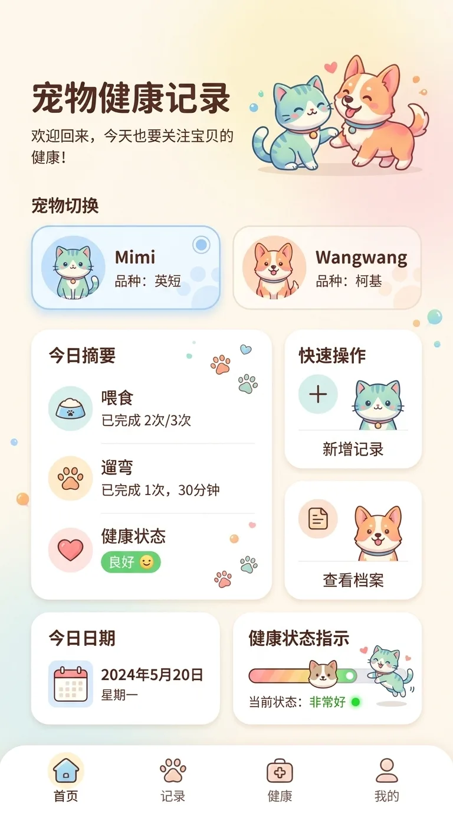

UI & Systems / PROJECT 04
Pet Health
给多宠物家庭的轻量健康记录
围绕宠物切换、日常记录和健康档案，把温暖的视觉语言变成可操作的手机原型。
- ROLE
- UX 流程、界面与组件设计；AI 辅助原型实现
- TIME
- 项目年份待确认
- TOOLS
- UI 组件、HTML / CSS / JavaScript、本机数据存储
- TYPE
- UX case study
- STATUS
- Interactive Prototype / Local Data

01 / OVERVIEW
Overview
面向「多宠物家庭」的轻量健康记录工具，支持猫咪 / 狗狗 / 其他宠物的切换与差异化记录。整套设计强调「温暖的医疗感」：柔和的薄荷绿 + 暖橙 + 蜜桃粉，配合圆润的卡通图标拉近距离。
02 / PROBLEM
Problem
多宠物家庭需要在不同宠物、不同照护事件之间快速切换。记录工具既要看得清楚，也要降低误把记录放到另一只宠物名下的风险。
03 / OBSERVATION / INSIGHT
Observation / Insight
当前宠物身份应该在操作前可辨认；日常照护与健康资料也需要不同层级。以上为针对产品场景的设计推导，没有提供真实家庭访谈样本。
04 / DESIGN GOAL
Design Goal
建立宠物选择、记录与档案的连续路径；让常见记录类型易于进入，让修改和保存状态清晰可见。
05 / AI OPPORTUNITY
AI Opportunity
AI 辅助编码用于将界面与组件做成交互样例。当前产品是记录工具，不宣称 AI 诊断、医疗建议或疾病识别。
06 / USER FLOW
User Flow
从入口到完成任务，保留最短、可以解释的操作链路。
- 01选择宠物
- 02选择记录类型
- 03填写或上传照片
- 04保存记录
- 05查看或编辑档案
依据现有项目资料整理的流程图，不代表另行开展了用户访谈或行为研究。
07 / INFORMATION ARCHITECTURE
Information Architecture
把核心对象、操作和反馈分别组织，避免功能堆叠掩盖主要任务。
今日首页
- 宠物切换
- 今日摘要
- 快速记录
照护记录
- 喂养与遛弯
- 健康状态
- 照片与编辑
宠物档案
- 基本信息
- 疫苗与医疗史
- 偏好与资料
08 / EXPLORATION
Exploration
柔和蓝绿、薄荷绿、暖橙和蜜桃粉建立亲近感；按钮、输入框、卡片、图标、徽章与底部导航组成一致的组件语言。
09 / PROTOTYPE
Prototype
这是使用本地浏览器数据的交互原型，不提供医疗诊断，也不是正式医疗服务。
10 / AI WORKFLOW
AI Workflow
把人的设计判断与 AI 可以辅助的工作分开说明。
Human directs.
- 定义记录类型与交互规则
- 设计组件和视觉层级
- 实际体验并提出调整
AI assists.
- 辅助实现界面和交互代码
- 不作宠物医疗判断
- 用户确认后才保存记录
11 / BUILD / VIBE CODING
Build / Vibe Coding
已有手机交互原型支持新增与修改记录、保存照片、编辑档案，并将数据保存在本机。它用于展示记录流程，不是医疗服务或联网病历平台。
12 / TESTING
Testing
本页提供可亲自操作的功能原型；没有正式用户研究或量化可用性数据。后续可用切换宠物、补记事件、编辑历史记录三个任务进行验证。
13 / ITERATION
Iteration
当前资料包含首页、记录、档案和设计系统。可以据此检查跨页组件是否一致，但不编写没有记录的实验轮次或完成率提升。
14 / OUTCOME
Outcome
从静态 UI 延伸为可操作的记录与档案样例，并以统一组件连接多宠物照护流程。数据仅存储在当前浏览器环境。
15 / REFLECTION
Reflection
下一步应测试错误恢复、照片上传失败与多宠物切换后的上下文提示；先保证记录可信，再考虑智能化扩展。
CONTINUE EXPLORING